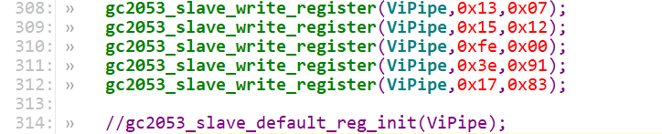
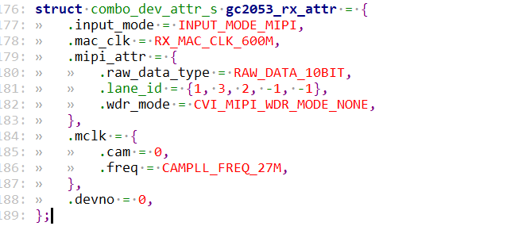
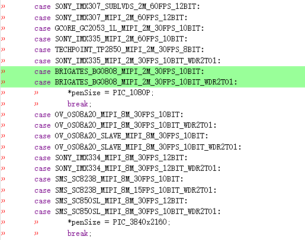
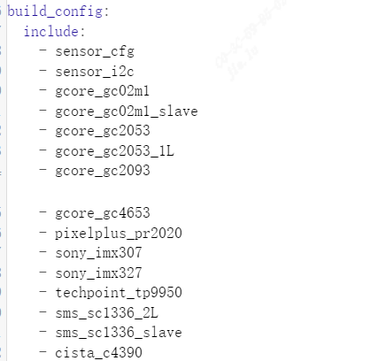
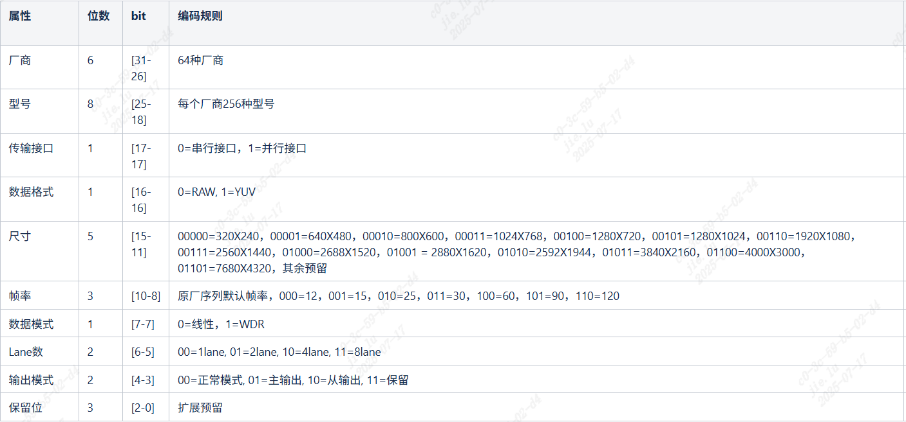
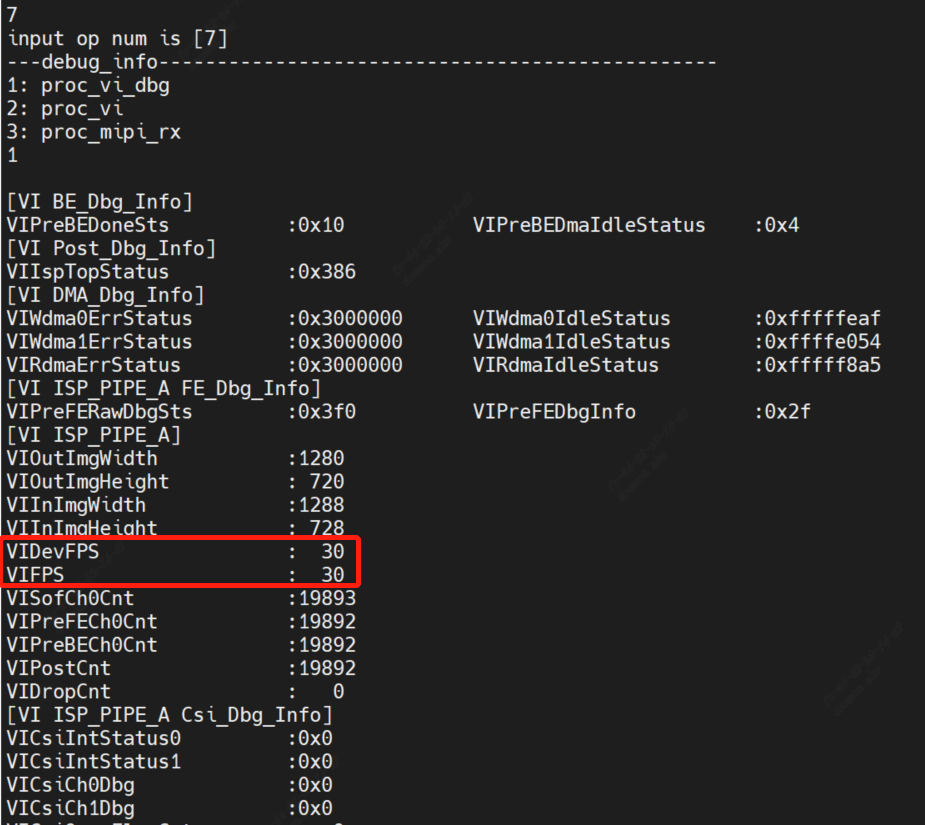

4. 图像输出调试(Linux非快启)¶
4.1. 硬件准备¶
确认Sensor电源供应正确.
确认Sensor Reset GPIO正确.
确认Sensor输入参考时钟来源(主处理器或外部晶振)
确认I2C可擦写Sensor寄存器.
可直接调用文件系统内默认的i2c_read/i2c_write命令验证.
4.2. 配置初始化序列¶
配置初始化序列建议参考版本发布包里的同厂商sensor驱动。
新sensor bringup建议先注释掉AE算法相关的callbacks以排除算法影响。
修改sample_common_vi.c，先去掉SAMPLE_COMM_ISP_Run调用。

修改xxx_cmos_ctrl.c中的init函数，先注解xxx_default_reg_init调用。
{kind=link}

当sensor适配完能显示出图像后，记得重新打开这些注解。
4.2.1. 准备Sensor驱动¶
依Sensor厂商、最大分辨率及WDR模式选择发布包内规格最接近的sensor驱动来作修改并编出sensor库。
具体可见component/isp/user/sensor/cv18xx/xxxx内的xxxx_cmos.c、xxxx_cmos_ex.h、xxxx_cmos_param.h与xxxx_sensor_ctl.c
修改xxxx_sensor_ctl.c内的I2C 配置如i2c_addr, addr_byte与data_byte
const CVI_U8 imx327_i2c_addr = 0x1A;
const CVI_U32 imx327_addr_byte = 2;
const CVI_U32 imx327_data_byte = 1;
依照sensor接口规格, 修改xxxx_cmos_param.h中的xxxx_rx_attr与pfnGetRxAttr, 设置mipi-rx的属性。
{kind=link}

.Input_mode:设置输入模式是mipi还是bt656等等。
.Mac_clk: mac时钟频率
.raw_date_type:data的位宽
.lane id:mipi数据lane、时钟lane的ID配置
.cam: mclk ID
.freq: SOC给sensor提供的参考输入时钟
.devno:mipirx的编号，sensor ID
依照sensor输出模式, 修改xxxx_cmos_param.h中的g_astxxx_mode.
static const IMX327_MODE_S g_astImx327_mode[IMX327_MODE_NUM] = {
[IMX327_MODE_1080P30] = {
.name = "1080p30",
.astImg[0] = {
.stSnsSize = {
.u32Width = 1948,
.u32Height = 1097,
},
.stWndRect = {
.s32X = 12,
.s32Y = 8,
.u32Width = 1920,
.u32Height = 1080,
},
.stMaxSize = {
.u32Width = 1948,
.u32Height = 1097,
},
},
.f32MaxFps = 30,
.f32MinFps = 0.119,
.u32HtsDef = 0x1130,
.u32VtsDef = 1125,
.stExp[0] = {
.u16Min = 1,
.u16Max = 1123,
.u16Def = 400,
.u16Step = 1,
},
.stAgain[0] = {
.u16Min = 1024,
.u16Max = 62416,
.u16Def = 1024,
.u16Step = 1,
},.stDgain[0] = {
.u16Min = 1024,
.u16Max = 38485,
.u16Def = 1024,
.u16Step = 1,
},
.u16RHS1 = 11,
.u16BRL = 1109,
.u16OpbSize = 10,
.u16MarginVtop = 8,
.u16MarginVbot = 9,
},
}
修改pfn_cmos_set_image_mode, 依照指定的宽高与帧率决定相符的sensor模式.
我们一般拿到的init sequence对应的输出模式都是最大分辨率，也就是all pixel scan模式。
但有些情况客户需要对sensor吐出来data进行裁剪，就需要适配成window crop mode，要找sensor厂商
提供crop mode下与之对应的init sequence，或者自行根据sensor spec进行修改。
4.2.2. Sensor初始化序列¶
实作xxxx_sensor_ctrl.c内sensor模式的初始序列pfn_cmos_sensor_init.
暂时注释xxxx_sensor_ctrl.c 内的xxxx_default_reg_init的呼叫.
新增sensor object

4.3. 适配sample common 和 alios config¶
将sensor object extern到
build/media/sensor/sensor_cfg/sensor_cfg.c
的getSnsObj(SNS_TYPE_E enSnsType) 函数中。

添加新的_SNS_TYPE_E到
build/media/sensor/sensor_cfg/sensor_cfg.h
的_SNS_TYPE_E 枚举列表中，linear在上半部，WDR在下半部。

sample_common_vi.c在SAMPLE_COMM_VI_GetDevAttrBySns、
SAMPLE_COMM_VI_GetSizeBySensor添加对应的case。

{kind=link}

在cvi_alios/components/cvi_mmf_sdk/cvi_sensor/package.yaml中添加对应的sensor driver目录名字和源文件信息
{kind=link}


在Linux中，sensor配置使用到的接口有如下，用法请参照sample：
CVI_S32 CVI_SNS_GPIO_Init(VI_PIPE ViPipe, SNS_I2C_GPIO_INFO_S *pstGpioCfg);
配置各个sensor的reset GPIO信息，SNS_I2C_GPIO_INFO_S结构体如下：
typedef struct _SNS_I2C_GPIO_INFO_S {
CVI_S8 s8I2cDev;
CVI_S32 s32I2cAddr;
CVI_U32 u32Rst_port_idx;
CVI_U32 u32Rst_pin;
CVI_U32 u32Rst_pol;
} SNS_I2C_GPIO_INFO_S;
CVI_S32 CVI_SNS_GetAhdStatus(VI_PIPE ViPipe, SNS_AHD_MODE_S *pstStatus);
获取AHD Sensor的状态，仅限于AHD sensor， SNS_AHD_MODE_S结构体如下：
typedef enum _SNS_AHD_MODE_E {
AHD_MODE_NONE,
AHD_MODE_1280X720H_NTSC,
AHD_MODE_1280X720H_PAL,
AHD_MODE_1280X720P25,
AHD_MODE_1280X720P30,
AHD_MODE_1280X720P50,
AHD_MODE_1280X720P60,
AHD_MODE_1920X1080P25,
AHD_MODE_1920X1080P30,
AHD_MODE_2304X1296P25,
AHD_MODE_2304X1296P30,
AHD_MODE_BUIsensor_cfg.h } SNS_AHD_MODE_S;
CVI_S32 CVI_SNS_SetSnsType(VI_PIPE ViPipe, CVI_U32 SnsType);
设置对应PIPE的sensor ID，此方法需要在调用其他方法之前调用， SnsType可以见sensor_cfg.h
CVI_S32 CVI_SNS_SetSnsRxAttr(VI_PIPE ViPipe, RX_INIT_ATTR_S *pstRxAttr);
设置对应sensor的RX配置， RX_INIT_ATTR_S结构体见cvi_sns_ctrl.h
CVI_S32 CVI_SNS_SetSnsI2c(VI_PIPE ViPipe, CVI_S32 astI2cDev, CVI_S32 s32I2cAddr);
设置对应sensor的I2C总线和地址
CVI_S32 CVI_SNS_SetSnsIspAttr(VI_PIPE ViPipe, ISP_INIT_ATTR_S *pstInitAttr);
设置sensor给到ISP的配置，ISP_INIT_ATTR_S结构体见cvi_sns_ctrl.h
CVI_S32 CVI_SNS_RegCallback(VI_PIPE ViPipe, ISP_DEV IspDev);
设置sensor和ISP的callback
CVI_S32 CVI_SNS_UnRegCallback(VI_PIPE ViPipe, ISP_DEV IspDev);
解除sensor和ISP的callback
CVI_S32 CVI_SNS_SetSnsImgMode(VI_PIPE ViPipe, ISP_CMOS_SENSOR_IMAGE_MODE_S *stSnsrMode);
设置sensor要跑的mode，包括fps，size等，ISP_CMOS_SENSOR_IMAGE_MODE_S结构体见cvi_comm_sns.h
CVI_S32 CVI_SNS_SetSnsWdrMode(VI_PIPE ViPipe, WDR_MODE_E wdrMode);
设置sensor的WDR mode，WDR_MODE_E结构体见cvi_comm_cif.h
CVI_S32 CVI_SNS_GetSnsRxAttr(VI_PIPE ViPipe, SNS_COMBO_DEV_ATTR_S *stDevAttr);
获取sensor的RX配置，SNS_COMBO_DEV_ATTR_S结构体见cvi_comm_cif.h
CVI_S32 CVI_SNS_SetSnsProbe(VI_PIPE ViPipe);
设置对应PIPE的sensor的probe
CVI_S32 CVI_SNS_SetSnsGpioInit(CVI_U32 devNo, CVI_U32 u32Rst_port_idx, CVI_U32 u32Rst_pin, CVI_U32 u32Rst_pol);
配置各个sensor的reset GPIO信息，u32Rst_port_idx， u32Rst_pin，u32Rst_pol见下节的ini配置内容
CVI_S32 CVI_SNS_RstSnsGpio(CVI_U32 devNo, CVI_U32 rstEnable);
将sensor的rst脚拉置有效位
CVI_S32 CVI_SNS_RstMipi(CVI_U32 devNo, CVI_U32 rstEnable);
reset对应的sensor使用的MIPI
CVI_S32 CVI_SNS_SetMipiAttr(VI_PIPE ViPipe, CVI_U32 SnsType);
将sensor的RX配置给CIF
CVI_S32 CVI_SNS_EnableSnsClk(CVI_U32 devNo, CVI_U32 clkEnable);
enable sensor的mclk
CVI_S32 CVI_SNS_SetSnsStandby(VI_PIPE ViPipe);
设置sensor的standby状态
CVI_S32 CVI_SNS_SetSnsInit(VI_PIPE ViPipe);
设置sensor开始init
CVI_S32 CVI_SNS_SetVIFlipMirrorCB(VI_PIPE ViPipe, VI_DEV ViDev);
将sensor的mirror和flip注册到VI之中
下面的方法提供给ISP使用，使用时请配合ISP相关文档查看
CVI_S32 CVI_SNS_GetAeDefault(VI_PIPE ViPipe, AE_SENSOR_DEFAULT_S *stAeDefault);
获取对应sensor的AE default状态
CVI_S32 CVI_SNS_GetIspBlkLev(VI_PIPE ViPipe, ISP_CMOS_BLACK_LEVEL_S *stBlc);
获取对应sensor的BLK值， ISP_CMOS_BLACK_LEVEL_S结构体见cvi_comm_sns.h
CVI_S32 CVI_SNS_SetSnsFps(VI_PIPE ViPipe, CVI_U8 fps, AE_SENSOR_DEFAULT_S *stSnsDft);
设置sensor的输出FPS
CVI_S32 CVI_SNS_GetExpRatio(VI_PIPE ViPipe, SNS_EXP_MAX_S *stExpMax);
获取sensor的曝光范围
CVI_S32 CVI_SNS_SetDgainCalc(VI_PIPE ViPipe, SNS_GAIN_S *stDgain);
设置sensor的数字增益值
CVI_S32 CVI_SNS_SetAgainCalc(VI_PIPE ViPipe, SNS_GAIN_S *stAgain);
设置sensor的模拟增益值
4.4. 一键设置sensor driver¶
CV184X新增了三个接口用于高效设置sensor driver，这些接口在使用后即可将sensor的模式，上下文初始化和MIPI设置获取出来；剩余只需要用户控制sensor的初始化，注册ISP，probe等动态操作。
CVI_S32 CVI_SNS_ParseIni(SENSOR_CFG_S *sensor_cfg);
解析sensor_cfg.ini配置文件获取sensor_cfg配置
CVI_S32 CVI_SNS_GetConfigInfo(SENSOR_CFG_S *sensor_cfg);
从sensor_cfg配置中获取sensor的配置信息
CVI_S32 CVI_SNS_SetSnsDrvCfg(SENSOR_CFG_S *sensor_cfg);
根据sensor_cfg配置设置sensor driver
外部应用依次调用即可，在返回成功之后，会将外部需要的回调和图像大小等等信息存放于sensor_cfg结构体中，外部应用可以根据需要配置使用。
4.5. 添加sensor ini cfg配置¶
Sensor的一些属性可以通过改ini来修改配置，比如lane线序、I2C端口sensor输出模式等。
默认情况下middleware的流程会优先从/mnt/data/sensor_ini.cfg下读取sensor的配置文件，如果该目录下没有配置文件，会使用代码内部的初始值。
下面以SC1336为例显示的sensor_cfg.ini内容:
[source]
;type = SOURCE_USER_FE
dev_num = 1
; section for sensor
[sensor]
; sensor name
name = 0x000A0030
bus_id = 3
mipi_dev = 0
lane_id = 2, 3, 1, -1, -1
pn_swap = 1, 1, 1, 0, 0
mclk_en = 1
mclk = 0
port = 0
pin = 2
pol = 1
fps = 60
name：sensor的运行模式，0x000A0030代表SMS_SC1336_1L_MIPI_1M_30FPS_10BIT
name 具体见build/media/cvi_sensor/sensor_cfg/sensor_cfg.h，其中定义了sensor支持列表；name命名规则如下表：
{kind=link}

Bus_id:表示I2C端口号
Mipi_dev:表示用哪一组mipi-rx
Lane_id:表示mipi的线序配置
pn_swap:表示这组mipi线序P/N是否需要反转
Pn_swap:表示P/N反转，不需要反转配成0，需要反转配置成1
Mclk:表示选用哪一组mclk作为参考时钟
Mclk_en:表示使能哪一组mclk输出
hw_sync：dual sensor帧同步，hw_sync=1表示slave sensor sync with master sensor
sns_i2c_addr：sensor的i2c 设备地址
port：sensor RST引脚对应到处理器的GPIO使用的port口 A/B/C - 0/1/2
pin：sensor RST引脚对应到处理器的GPIO使用的port口的编号
pol：sensor RST引脚的有效电平
- 对应的参数配置如下：
enum of_gpio_flags {
OF_GPIO_ACTIVE_LOW = 0x1,
OF_GPIO_SINGLE_ENDED = 0x2,
OF_GPIO_OPEN_DRAIN = 0x4,
OF_GPIO_TRANSITORY = 0x8,
OF_GPIO_PULL_UP = 0x10,
OF_GPIO_PULL_DOWN = 0x20,
};
fps：sensor 的输出fps，默认为25，其他fps需要设置对应的fps值
4.6. 编译运行sensor_test¶
前面小节配置完后，在SDK顶层目录执行 make peripherals_test 进行编译，将编译后的固件烧录到板端；
烧录启动后，Linux串口终端执行sample_sensor

在alios 串口输入 proc/vi_dbg 查看vi_dbg信息，帧率显示正常则表示sensor有正常出图
{kind=link}
